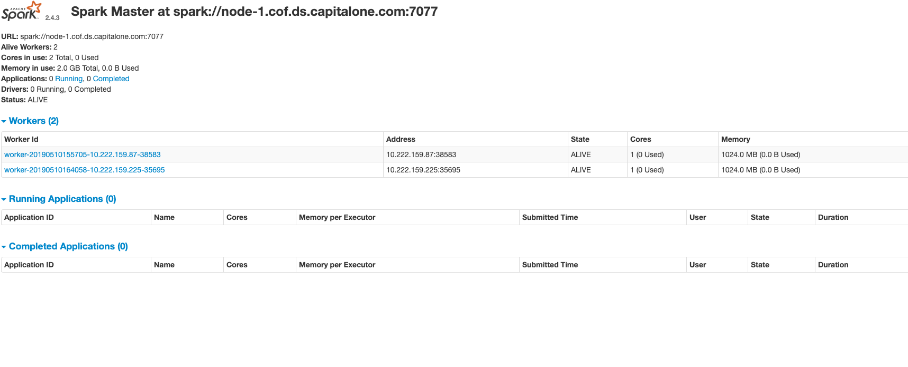
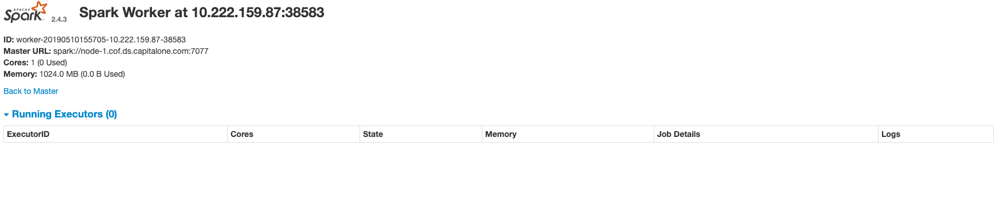

ongoing
Apache Spark standalone cluster
Lets setup a standalone cluster manually
Create 3 serves ( VMs or physical machines )
- node-1 for master
- node-2 and node-3 for slaves.
on node-1
- Download spark binary
- run
/sbin/start-master.sh
This would open port on 8080 for Master UI and port 7077 for communication with workers processes over the
newtwork.
The 2 ports are configurable.

on node -2 and node-3
- Download spark binary
- run /sbin/start-slave.sh
master-ip:7077
This would open port on 8081 for the worker UI and a random port to communicate with the master process over the
network.
Port 8081 can be configured.
- At this point workers have communicated with the master and formed a cluster which can be seen in the below
pic.
